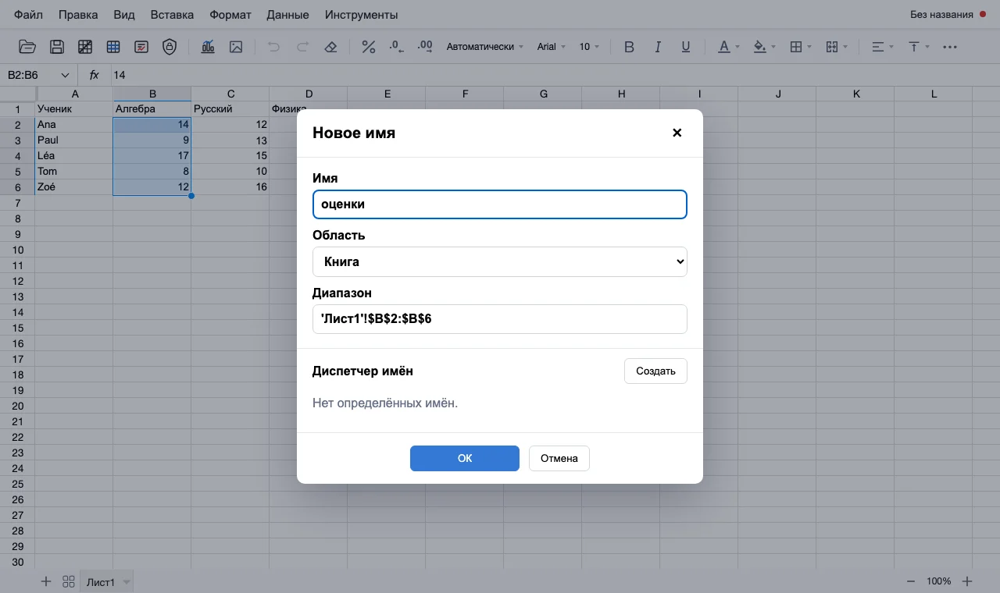

Именованные диапазоны
Дать имя
- Выделить ячейку или диапазон.
- Правая кнопка › Присвоить имя… (или стрелка поля имени › Диспетчер имён).
- Набрать имя, выбрать область, ОК.

| Поле | Содержание |
|---|---|
| Имя | начинается с буквы или _; буквы, цифры, _ и ., без пробелов; не адрес вроде B2 |
| Область | Книга: читается со всех листов; лист: читается только с него, где имя важнее имени книги |
| Диапазон | ячейка или диапазон вместе с листом: 'Лист1'!$B$2:$B$6 |
Использование имени
=СРЗНАЧ(оценки)
=цена*(1+ндс)- Стрелка поля имени показывает имена: выбор имени выделяет его диапазон на его листе.
- Если выделен ровно именованный диапазон, поле имени показывает его имя.
- Раскрывающийся список может читать диапазон ячеек, заданный адресом.
Изменение, удаление
В окне Диспетчер имён щелчок по имени возвращает его поля для изменения; Удалить удаляет его; Создать возвращает пустое имя. Прежде чем удалить имя, замените формулы, которые его читают: они сохранят последнее значение, а затем перестанут вычисляться.
Имена сохраняются в файле Excel и читаются из него.